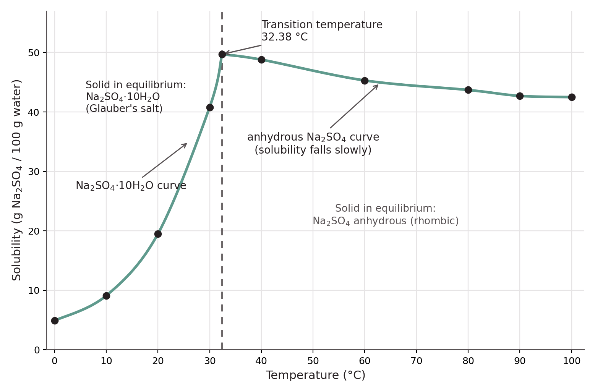
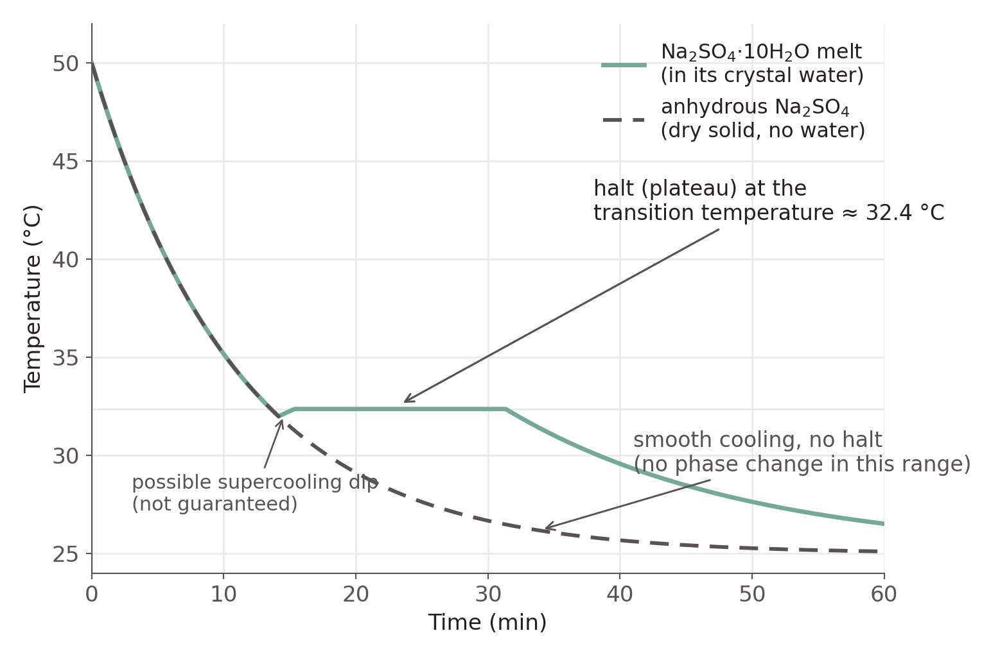

المكتبة / Report SR-1
Sodium Sulfate Curves
The solubility–temperature curve and the cooling curve of anhydrous sodium sulfate and its decahydrate (Glauber's salt).
Abstract
This report answers two questions about the behavior of sodium sulfate Na₂SO₄ with temperature. It presents the solubility–temperature curve of the anhydrous salt and its decahydrate from 0 to 100 °C, rising to a maximum solubility of 49.7 g Na₂SO₄ per 100 g water at the transition temperature of 32.38 °C, and it explains how the cooling-curve method determines that transition temperature from temperature and time measurements alone. The report relies on published data from the documented sources listed at the end; no dedicated laboratory measurements were performed for it.
Keywords: sodium sulfate; Glauber's salt; solubility curve; cooling curve; transition temperature; phase rule.
| Student | Ahmed Awed Abdullmaged |
|---|---|
| Group | 2 |
| Department | Biology and Chemistry |
| Year | Second Year |
| Faculty | Faculty of Science, Al-Azhar University (Assiut) |
| Date | November 23, 2026 |
Introduction
This report answers two questions about the behavior of sodium sulfate Na₂SO₄ with temperature: the first concerns the solubility–temperature curve of the anhydrous salt and its decahydrate, and the second concerns determining the transition temperature by the cooling-curve method. The report relies on published data from documented sources listed at the end; no dedicated laboratory measurements were performed for it.
Question 1: The Solubility–Temperature Curve
The hydrated salt Na₂SO₄·10H₂O is Glauber's salt, and its mineral is mirabilite, while anhydrous Na₂SO₄ crystallizes in the rhombic (orthorhombic) system and its mineral is thenardite.
The shape of the curve is distinctive: from 0 °C up to 32.4 °C the solubility increases rapidly (more than tenfold), then slowly decreases as the temperature rises. The reason is that the solid phase in equilibrium with the saturated solution changes: below the transition temperature the equilibrium solid is the decahydrate, and above it the solid becomes the anhydrous salt. The point where the two branches meet is the transition temperature, which is also the point of maximum solubility.
| Temperature | Solubility |
|---|---|
| 0 °C | 4.9 |
| 10 °C | 9.1 |
| 20 °C | 19.5 |
| 30 °C | 40.8 |
| 32.38 °C (maximum solubility) | 49.7 |
| 100 °C | 42.5 |

Units basis: all values in this report use a single basis: g Na₂SO₄ per 100 g water. The maximum value 49.7 is stated explicitly on this basis at vias.org, and it matches the composition of the saturated solution at the transition in the NBS study: 33.2 wt% means exactly 49.7 g per 100 g water. Some sites give similar numbers on a g-per-100 mL basis, which is a different basis that must not be mixed with the first in one curve.
- Hydrated-salt branch (0 to 32.4 °C): solubility rises sharply, and the equilibrium solid is Na₂SO₄·10H₂O.
- Anhydrous-salt branch (above 32.4 °C): solubility slowly decreases as temperature rises; this is called retrograde solubility, and the equilibrium solid is anhydrous Na₂SO₄.
- At the transition temperature, incongruent melting occurs: the hydrate converts to solid anhydrous salt plus a saturated solution, not to a liquid of the same composition.
Question 2: The Cooling Curve (Temperature vs. Time)
The idea is to record the sample's temperature over time as it cools. Any phase transition releases latent heat, which appears in the plot as a clear plateau or halt, from which the transition temperature is determined using no measurement other than temperature and time.
The setup assumed here (the common one for this experiment): the sample is heated to about 50 °C and left to cool in an insulated container with gentle stirring, and the temperature is recorded at fixed time intervals. The wording of the question does not specify the setup, so this is a stated assumption, not a confirmed part of the requirement.

Decahydrate curve: the decahydrate melts in its crystal water at about 50 °C (incongruent melting producing solid anhydrous salt plus a saturated solution). When it cools to 32.4 °C, the decahydrate begins to crystallize again, releasing heat, so a halt appears until the transition is complete, then the curve continues downward.
Dry anhydrous curve (solid with no water): a smooth, continuous decline with no halt in this range, because it undergoes no phase transition here; its true melting point is 884 °C.
A fundamental difference: if the anhydrous salt is mixed with water (a solution or a saturated paste of suitable composition), it takes up water and forms the decahydrate at 32.4 °C, so a halt appears for it too, and the NBS study itself started from anhydrous salt with water. In other words, the halt is tied to the presence of water and the composition, not to the name of the starting material.
In the lab, the halt is not an ideal horizontal line: supercooling may occur, meaning a slight dip below 32.4 °C before crystallization starts, or it may not occur; gentle stirring or seeding with a small crystal reduces it. Readings are recorded as they actually happen and are plotted as they are.
Interpretation using the Gibbs phase rule at constant pressure: two components (salt and water) and three equilibrium phases (solution, hydrated solid, and anhydrous solid), so the degrees of freedom F = C − P + 1 = 0, meaning the temperature remains constant until one of the phases is consumed.
Experiment Steps in Brief
- A quantity of Glauber's salt is melted in a water bath at about 50 °C, so that it melts in its crystal water.
- It is transferred to an insulated container (an insulated flask or beaker) fitted with a thermometer and a means of stirring.
- The temperature is recorded at fixed time intervals (every minute, for example) during cooling with gentle stirring; if supercooling occurs, stir or add a small decahydrate crystal to start crystallization.
- The temperature–time curve is plotted; the constant temperature during the halt is the transition temperature, whose precisely measured reference value is 32.374 ± 0.001 °C.
Sources
- Magin et al. (1981), US National Bureau of Standards (NBS): precise measurement of the transition temperature and the incongruent melting. pmc.ncbi.nlm.nih.gov/articles/PMC6756278/
- Saltwiki (from the work of Steiger et al.): stable and metastable sodium sulfate phases and solubility behavior. saltwiki.net/index.php/Sodium_sulfate
- Wikipedia article "Sodium sulfate": properties of both salts, the shape of the solubility curve, and the maximum solubility of 49.7 at 32.38 °C. en.wikipedia.org/wiki/Sodium_sulfate
- Wikipedia "Solubility table": measured solubility at different temperatures. en.wikipedia.org/wiki/Solubility_table
- vias.org: maximum solubility of 49.7 g Na₂SO₄ per 100 g water at the transition temperature. vias.org/genchem/inorgcomp_sodiumsulfate.html
How to cite this report
Awed Abdullmaged, A. (2026). Sodium Sulfate Curves. Science Research, Report No. 1, November 23, 2026. Under the supervision of Dr. Rabie Dahi.